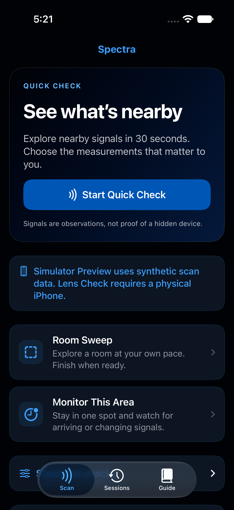
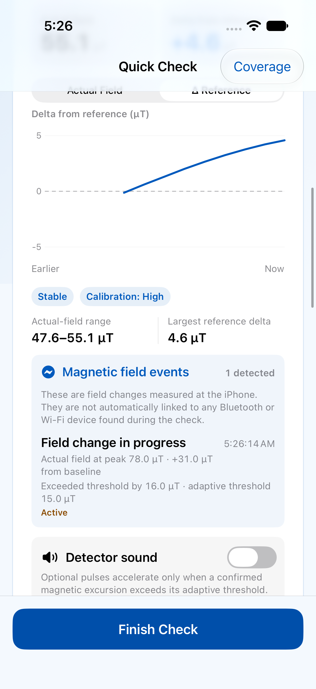

{kind=link}
{kind=link}
01 / Quick Check
Get your bearings.
Get a roughly 30-second snapshot of nearby signals in a café, shared workspace, or unfamiliar room.
Personal privacy. Practical awareness.
Meet Spectra. Explore nearby Bluetooth signals, local network services, and magnetic-field changes—all on your device.
Apple iPhone 16/17 · iOS 27
Meet Spectra
Three ways to explore the space around you.
See nearby Bluetooth broadcasts, discover supported services on your joined Wi-Fi network, and track magnetic-field changes. Spectra brings the results together, with the evidence behind each observation.
Explore probable device identities and camera, audio, or smart-glasses indicators without pairing with or connecting to discovered devices.
Signals are clues, not proof that a device is hidden, recording, or malicious. A quiet scan cannot guarantee that a space is clear.
Inside the app
Explore real screens from Spectra. Readings are simulated examples, not evidence of nearby devices. Select a screen to view it full-size.

Choose a mode, select your measurements, and begin exploring.

Track magnetic changes with a live graph, event details, and optional sound.
A check for every setting
01 / Quick Check
Get a roughly 30-second snapshot of nearby signals in a café, shared workspace, or unfamiliar room.
02 / Room Sweep
Move through a room, compare signals, and follow magnetic changes. Take your time, without a countdown.
03 / Monitor This Area
Track new and returning signals against a starting snapshot while Spectra stays open and active. Foreground monitoring only.
How it works
Combine Bluetooth, local network, and magnetic measurements—or choose the sources that matter to you.
Recognize nearby broadcasts and compare reception as you move with Follow Signal.
Signal strength—not an exact distance or direction.
Find advertised services on the Wi-Fi network you’ve joined, from speakers and streaming receivers to smart-home products.
Network presence—not a scan of every nearby Wi-Fi radio.
Track field strength or changes from a stable reference, with a live graph and optional audio cues.
A field change—not proof of a particular device.
Explore possible device identities from a local catalog. Filter results by category and inspect the clues behind each match.
See related observations in Summary, then expand a result or use All Signals for individual identities and technical details. Groups are not confirmed device counts.
Use Lens to examine bright reflections and Sound to check emitted audio. Neither can prove a hidden camera is present or tell whether a silent microphone is listening.
Save checks on your device, revisit findings, and explore illustrated guides. Turn history off or delete saved reports at any time.
The Arc Signal approach
On your device. Under your control.
Arc Signal LLC builds tools for everyday security awareness. Spectra helps you investigate electronic clues, with clear limits and privacy built in.
No website analytics, forms, or ad trackers. Fonts and images load locally; our hosting provider may retain routine request logs.
Good questions
No. Spectra reveals available signals, not a safety verdict. Silent, powered-off, wired, shielded, cellular-only, or locally recording devices may not appear. Use findings as a reason to look more closely.
No. Names and metadata can be changed or spoofed. Matches are possible or probable identities, with the underlying observations available for review.
No pairing or direct connection is needed. Local-network discovery requires joining the network and granting permission. Results depend on your chosen sources and device capabilities.
Spectra is here
Now available on the App Store. Get Spectra and take a closer look.

Apple iPhone 16/17 · iOS 27